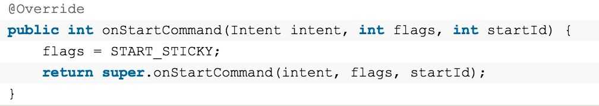
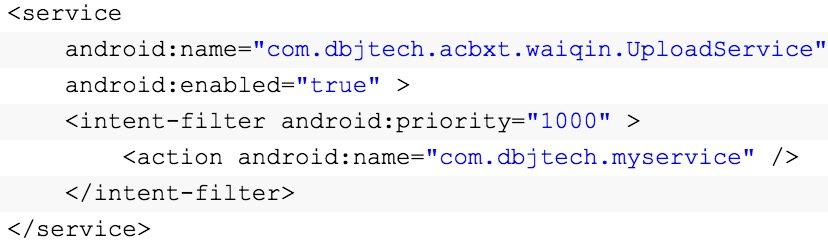
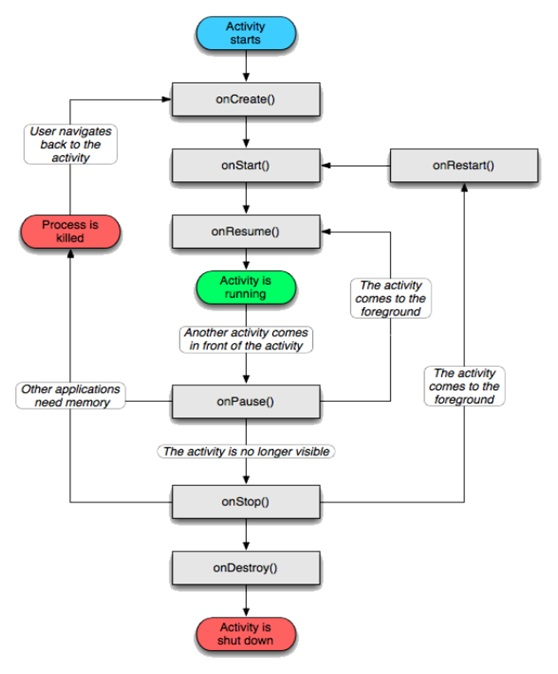
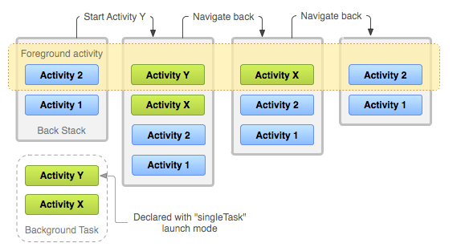
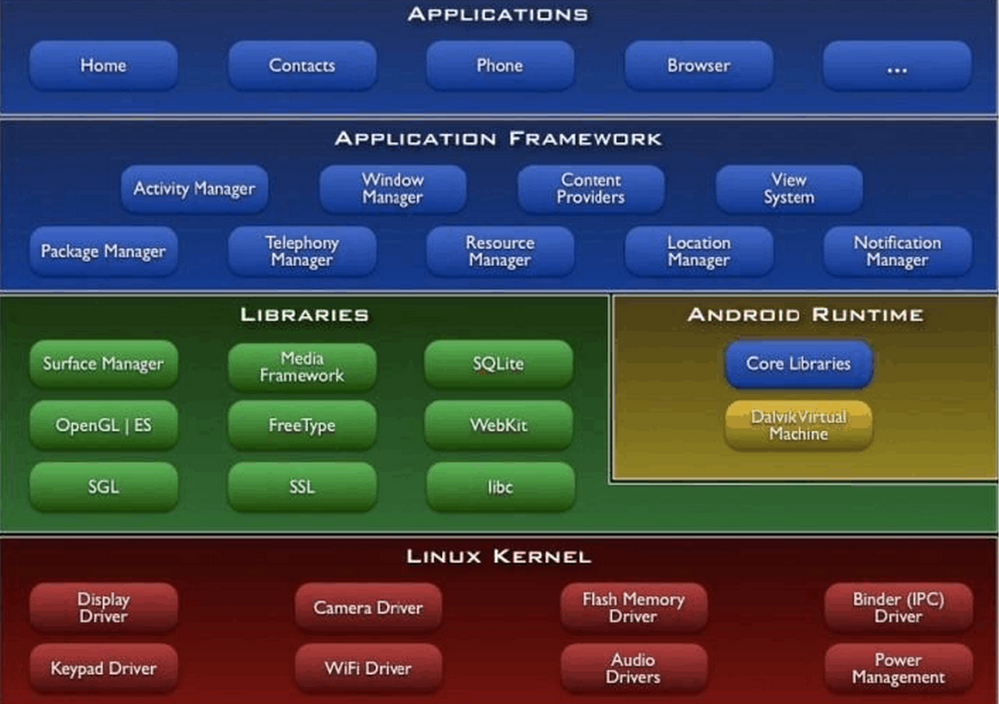

1.Adapter模式使得那些原本因为接口不兼容而不能在一起工作的的类可以在一起工作
2.Activity生命周期的根本目的是为了设计用户体验更加良好的应用
3.Fragment的优点
- Fragment可以使你能够将activity分离成多个可重用的组件，每个都有它自己的生命周期和UI。
- Fragment可以轻松得创建动态灵活的UI设计，可以适应于不同的屏幕尺寸。从手机到平板电脑。
- Fragment是一个独立的模块,紧紧地与activity绑定在一起。可以运行中动态地移除、加入、交换等。
- Fragment提供一个新的方式让你在不同的安卓设备上统一你的UI。
- Fragment 解决Activity间的切换不流畅，轻量切换。
- Fragment 替代TabActivity做导航，性能更好。
- Fragment 在4.2.版本中新增嵌套fragment使用方法，能够生成更好的界面效果。
- Fragment做局部内容更新更方便，原来为了到达这一点要把多个布局放到一个activity里面，现在可以用多Fragment来代替，只有在需要的时候才加载Fragment，提高性能。
- 可以从startActivityForResult中接收到返回结果,但是View不能。
4.activity与service通信
- Activity调用bindService (Intent service, ServiceConnection conn, int flags)方法，得到Service对象的一个引用，这样Activity可以直接调用到Service中的方法，如果要主动通知Activity，我们可以利用回调方法
- Service向Activity发送消息，可以使用广播，当然Activity要注册相应的接收器。比如Service要向多个Activity发送同样的消息的话，用这种方法就更好
5.app出现crash的原因
- 内存管理错误：内存泄露，引用出错（空指针），内存不足
- 程序逻辑错误：数组越界、堆栈溢出、并发操作、逻辑错误
- SDK错误 （部署版本< 编译版本）
- 主线程阻塞
6.让Activity变成一个窗口
- android:theme="@android:style/Theme.Translucent"
- android:theme="@android:style/Theme.Dialog"
7.activity被回收
onSaveInstanceState中储存Bundle（系统维护的一个map对象）在onCreate中判空调用
8.runtimeException
- NullPointerException - 空指针引用异常
- ClassCastException - 类型强制转换异常。
- IllegalArgumentException - 传递非法参数异常。
- ArithmeticException - 算术运算异常
- ArrayStoreException - 向数组中存放与声明类型不兼容对象异常
- IndexOutOfBoundsException - 下标越界异常
- NegativeArraySizeException - 创建一个大小为负数的数组错误异常
- NumberFormatException - 数字格式异常
- SecurityException - 安全异常
- UnsupportedOperationException - 不支持的操作异常
- 文件已结束异常：EOFException
- 操作数据库异常：SQLException
- 输入输出异常：IOException
9.横竖屏切换时候activity的生命周期
- 不设置Activity的android:configChanges时，切屏会重新调用各个生命周期，切横屏时会执行一次，切竖屏时会执行两次
- 设置Activity的android:configChanges="orientation"时，切屏还是会重新调用各个生命周期，切横、竖屏时只会执行一次
- 设置Activity的android:configChanges="orientation|keyboardHidden"时，切屏不会重新调用各个生命周期，只会执行onConfigurationChanged方法
10.如何将打开res aw目录中的数据库文件?
在Android中不能直接打开res aw目录中的数据库文件，而需要在程序第一次启动时将该文件复制到手机内存或SD卡的某个目录中，然后再打开该数据库文件。复制的基本方法是使用getResources().openRawResource方法获得resaw目录中资源的InputStream对象，然后将该InputStream对象中的数据写入其他的目录中相应文件中。在Android SDK中可以使用SQLiteDatabase.openOrCreateDatabase方法来打开任意目录中的SQLite数据库文件。
11.startService和bindService区别
Service是在一段不定的时间运行在后台，不和用户交互应用组件。每个Service必须在manifest中 通过<service>来声明，运行在进程的主线程中.拥有service的进程具有较高的优先级(官方文档告诉我们，Android系统会尽量保持拥有service的进程运行)
1 通过startService
Service会经历 onCreate --> startCommand()
stopService的时候直接onDestroy
如果是 调用者 直接退出而没有调用stopService的话，Service会一直在后台运行。
下次调用者再起来仍然可以stopService。
2 通过bindService
Service只会运行onCreate， 这个时候 调用者和Service绑定在一起onBind()
调用者退出了，Srevice就会调用onUnbind-->onDestroyed
所谓绑定在一起就共存亡了。
注意：Service的onCreate的方法只会被调用一次
保证service不被杀掉的方法
- onStartCommand方法，返回START_STICKY
- 提升service优先级AndroidManifest.xml文件中对于intent-filter可以通过android:priority = "1000"
- 提升service进程优先级 Android中的进程是托管的，当系统进程空间紧张的时候，会依照优先级自动进行进程的回收。Android将进程分为6个等级,它们按优先级顺序由高到低依次是: 1.前台进程( FOREGROUND_APP) 2.可视进程(VISIBLE_APP ) 3. 次要服务进程(SECONDARY_SERVER ) 4.后台进程 (HIDDEN_APP) 5.内容供应节点(CONTENT_PROVIDER) 6.空进程(EMPTY_APP)
- onDestroy方法里重启service (1)service +broadcast 方式，就是当service走ondestory的时候，发送一个自定义的广播，当收到广播的时候，重新启动service
或者(2)直接在onDestroy（）里startService
5.监听系统广播判断Service状态
通过系统的一些广播，比如：手机重启、界面唤醒、应用状态改变等等监听并 捕获到，然后判断我们的Service是否还存活，别忘记加权限
6.可以研究一下 守护进程 和 AIDL
12.TouchEvent相关
android
系统中的每个ViewGroup的子类都具有下面三个和TouchEvent处理密切相关的方法：
1）public boolean dispatchTouchEvent(MotionEvent ev) 这个方法用来分发TouchEvent
2）public boolean onInterceptTouchEvent(MotionEvent ev) 这个方法用来拦截TouchEvent
3）public boolean onTouchEvent(MotionEvent ev) 这个方法用来处理TouchEvent
事件触发顺序如下：
13.view内部流程
onMeansure,onLayout,onDraw
onMeansure：onMeasure()方法顾名思义就是用于测量视图的大小的,方法接收两个参数，widthMeasureSpec和heightMeasureSpec，这两个值分别用于确定视图的宽度和高度的规格和大小。
onLayout：measure过程结束后，视图的大小就已经测量好了，接下来就是layout的过程了。正如其名字所描述的一样，这个方法是用于给视图进行布局的，也就是确定视图的位置。
onDraw：measure和layout的过程都结束后，接下来就进入到draw的过程了。同样，根据名字你就能够判断出，在这里才真正地开始对视图进行绘制。ViewRoot中的代码会继续执行并创建出一个Canvas对象，然后调用View的draw()方法来执行具体的绘制工作。draw()方法内部的绘制过程总共可以分为六步。
第一步的作用是对视图的背景进行绘制。这里会先得到一个mBGDrawable对象，然后根据layout过程确定的视图位置来设置背景的绘制区域，之后再调用Drawable的draw()方法来完成背景的绘制工作。那么这个mBGDrawable对象是从哪里来的呢？其实就是在XML中通过android:background属性设置的图片或颜色。当然你也可以在代码中通过setBackgroundColor()、setBackgroundResource()等方法进行赋值。
接下来的第三步是，这一步的作用是对视图的内容进行绘制。可以看到，这里去调用了一下onDraw()方法，那么onDraw()方法里又写了什么代码呢？进去一看你会发现，原来又是个空方法啊。其实也可以理解，因为每个视图的内容部分肯定都是各不相同的，这部分的功能交给子类来去实现也是理所当然的。
第三步完成之后紧接着会执行第四步，这一步的作用是对当前视图的所有子视图进行绘制。但如果当前的视图没有子视图，那么也就不需要进行绘制了。因此你会发现View中的dispatchDraw()方法又是一个空方法，而ViewGroup的dispatchDraw()方法中就会有具体的绘制代码。
以上都执行完后就会进入到第六步，也是最后一步，这一步的作用是对视图的滚动条进行绘制。那么你可能会奇怪，当前的视图又不一定是ListView或者ScrollView，为什么要绘制滚动条呢？其实不管是Button也好，TextView也好，任何一个视图都是有滚动条的，只是一般情况下我们都没有让它显示出来而已。绘制滚动条的代码逻辑也比较复杂，这里就不再贴出来了，因为我们的重点是第三步过程。
14.thread,handler，looper，messageQueue
简单来讲，主线程创建是会默认创建一个looper，而looper创建是会自动创建一个messageQueue,其他时候可以通过looper.prepare()方法创建。thread通过handler.sendMessage()将message传递给looper，looper再将message放入消息队列中。当Looper对象看到MessageQueue中含有Message，就将其广播出去。对应的handler 对象收到该消息后，调用相应的handler 对象的handleMessage()方法对其进行处理。
15.Intent，Bundle
Bundle只是一个信息的载体，将内部的内容以键值对组织
Bundle
extends Objectimplements Parcelable Cloneable
intent负责Activity之间的交互，内部是带有一个Bundle的，putExtras(Bundle)和extras可以对Bundle进行set和get。
Intent有以下几个属性：
动作(Action指Intent要完成的动作，是一个字符串常量),数据(Data是执行动作的URI和MIME类型),分类(Category是一个执行动作Action的附加信息，比如：CATEGORY_HOME则表示放回到Home界面),类型(Type显式指定Intent的数据类型（MIME）),组件(Compent指定Intent的的目标组件的类名称)以及扩展信(Extra是添加一些组件的附加信息。比如，如果我们要通过一个Activity来发送一个Email，就可以通过Extra属性来添加subject和body)。其中最常用的是Action属性和Data属性。
16.service和thread的区别
Thread：Thread 是程序执行的最小单元，它是分配CPU的基本单位。可以用 Thread 来执行一些异步的操作。Thread 的运行是独立于 Activity 的。
service是安卓的一种机制，是系统的组件，它由系统进程托管（servicemanager）；它们之间6的通信类似于client和server，是一种轻量级的ipc（Inter-Process Communication 进程间通信）通信，这种通信的载体是binder，它是在linux层交换信息的一种ipc。而thread是由本应用程序托管。
17.IntentService
IntentService是一个通过Context.startService(Intent)启动可以处理异步请求的Service,使用时你只需要继承IntentService和重写其中的onHandleIntent(Intent)方法接收一个Intent对象,在适当的时候会停止自己(一般在工作完成的时候). 所有的请求的处理都在一个工作线程中完成,它们会交替执行(但不会阻塞主线程的执行),一次只能执行一个请求.
从源码可以分析出:
IntentService 实际上是Looper,Handler,Service 的集合体,他不仅有服务的功能,还有处理和循环消息的功能.
18.onXxxListener()
onXxxListener()只是程序级别的监听，这些监听会随着程序退出时关闭
BroadcastReceiver属于系统级别的监听，拥有自己的进程，只要存在与之匹配的Intent被广播出去，BroadcastReceiver总会被激发。
19.Json，XML
(1).XML的优缺点
<1>.XML的优点
A.格式统一，符合标准；
B.容易与其他系统进行远程交互，数据共享比较方便。
<2>.XML的缺点
A.XML文件庞大，文件格式复杂，传输占带宽；
B.服务器端和客户端都需要花费大量代码来解析XML，导致服务器端和客户端代码变得异常复杂且不易维护；
C.客户端不同浏览器之间解析XML的方式不一致，需要重复编写很多代码；
D.服务器端和客户端解析XML花费较多的资源和时间。
(2).JSON的优缺点
<1>.JSON的优点：
A.数据格式比较简单，易于读写，格式都是压缩的，占用带宽小；
B.易于解析，客户端JavaScript可以简单的通过eval()进行JSON数据的读取；
C.支持多种语言，包括ActionScript, C, C#, ColdFusion, Java, JavaScript, Perl, PHP, Python, Ruby等服务器端语言，便于服务器端的解析；
D.在PHP世界，已经有PHP-JSON和JSON-PHP出现了，偏于PHP序列化后的程序直接调用，PHP服务器端的对象、数组等能直接生成JSON格式，便于客户端的访问提取；
E.因为JSON格式能直接为服务器端代码使用，大大简化了服务器端和客户端的代码开发量，且完成任务不变，并且易于维护。
<2>.JSON的缺点
A.没有XML格式这么推广的深入人心和喜用广泛，没有XML那么通用性；
B.JSON格式目前在Web Service中推广还属于初级阶段。
20.Async Task
Async Task降低异步开发难度，在Handler基础上提出的。相当于一个线程池，
1.execute(Params... params)，执行一个异步任务，需要我们在代码中调用此方法，触发异步任务的执行。
2.onPreExecute()，在execute(Params... params)被调用后立即执行，一般用来在执行后台任务前对UI做一些标记。
3.doInBackground(Params... params)，在onPreExecute()完成后立即执行，用于执行较为费时的操作，此方法将接收输入参数和返回计算结果。在执行过程中可以调用publishProgress(Progress... values)来更新进度信息。
4.onProgressUpdate(Progress... values)，在调用publishProgress(Progress... values)时，此方法被执行，直接将进度信息更新到UI组件上。
5.onPostExecute(Result result)，当后台操作结束时，此方法将会被调用，计算结果将做为参数传递到此方法中，直接将结果显示到UI组件上
Async Task使用准则：
1.Task实例在UI线程中创建
2.execute方法必须在UI线程调用
3.不要手动调用异步方
4.Task()只能被执行一次，否则多次调用会出现异常
21.序列化
将对象的状态信息转换为可以存储或传输的形式的过程。
序列化运行时使用一个称为 serialVersionUID 的版本号与每个可序列化类相关联，该序列号在反序列化过程中用于验证序列化对象的发送者和接收者是否为该对象加载了与序列化兼容的类。如果接收者加载的该对象的类的 serialVersionUID 与对应的发送者的类的版本号不同，则反序列化将会导致 InvalidClassException。可序列化类可以通过声明名为 "serialVersionUID" 的字段（该字段必须是静态 (static)、最终 (final) 的 long 型字段）显式声明其自己的 serialVersionUID：
22.Android进程特性
Android进程共分为五类优先级，分别是：Foreground Process, Visible Process, Service Process, Background Process, Empty Process。顾名思义不难看出，这说明，越和用户操作紧密相连的，越是正与用户交互的，优先级越高，越难被回收。
23.生命周期，4大基本组件

Android四大基本组件分别是Activity，Service服务,Content Provider内容提供者，BroadcastReceiver广播接收器
24.broadcast类型
普通广播 (Normal broadcasts)
发送一个广播，所以监听该广播的广播接收者都可以监听到改广播。
异步广播 , 当处理完之后的Intent ，依然存在，这时候registerReceiver(BroadcastReceiver, IntentFilter) 还能收到他的值，直到你把它去掉 , 不能将处理结果传给下一个接收者 , 无法终止广播 .
有序广播 (Ordered broadcasts)
按照接收者的优先级顺序接收广播 , 优先级别在 intent-filter 中的 priority 中声明,-1000 到 1000 之间 , 值越大 , 优先级越高 . 可以终止广播意图的继续传播 . 接收者可以篡改内容 .
通过Context.sendBroadcast() 、 sendOrderBroadcast() 或 sendStickyBroadcast() 将intent广播出去
BroadcastReceiver
每次广播到来时 , 会重新创建 BroadcastReceiver 对象 , 并且调用 onReceive() 方法 , 执行完以后 , 该对象即被销毁。生命周期只有10秒，如果在 onReceive() 内做超过十秒内的事情会报错。
25.线程同步
当使用多个线程来访问同一个数据时，非常容易出现线程安全问题(比如多个线程都在操作同一数据导致数据不一致),所以我们用同步机制来解决这些问题。
1、同步代码块：
synchronized(同一个数据){} 同一个数据：就是N条线程同时访问一个数据。
2、同步方法：
public synchronized 数据返回类型方法名(){}
同步锁：
我们可以给共享资源加一把锁，这把锁只有一把钥匙。哪个线程获取了这把钥匙，才有权利访问该共享资源。
同步锁不是加在共享资源上，而是加在访问共享资源的代码段上。
26.activity通信
intent，SQLite，SharedPreference，File，ContentProvider，IPC
27.数据持久化
SQLite，SharedPreference，File，ContentProvider
28.binder
activity与系统service肯定不是同一个进程，但是它们之间是怎样实现通信的呢？Binder是android中一种实现进程间通信（IPC）的方式之一。
binder属于一个驱动，工作在linux层面，运行在内核态，它的操作完成是基于一段内存
binder通信是一种client-server的通信结构
本质上可以理解为它实现了Client对Server对象的远程调用。比如，有某个binder对象A位于Server中，该对象提供了一套函数用以实现对服务的请求，而在一个或多个Client中包含对象A的引用，Client通过该引用可以调用远端Server中对象A的接口函数，这种远端调用对Client而言，与调用本地对象并无区别。
1.从表面上来看，是client通过获得一个server的代理接口，对server进行直接调用；
2.实际上，代理接口中定义的方法与server中定义的方法是一一对应的；
3.client调用某个代理接口中的方法时，代理接口的方法会将client传递的参数打包成为Parcel对象；
4.代理接口将该Parcel发送给内核中的binder driver.（Parcel是binder IPC中的最基本的通信单元，它存储C-S间函数调用的参数.但是Parcel只能存储基本的数据类型）
5.server会读取binder driver中的请求数据，如果是发送给自己的，解包Parcel对象，处理并将结果返回；
6.整个的调用过程是一个同步过程，在server处理的时候，client会block住。
29.Activity的四种加载模式
standard,singleTop,singleTask,singleInstance
standard：Activity的默认加载方法，即使某个Activity在Task栈中已经存在，另一个activity通过Intent跳转到该activity，同样会新创建一个实例压入栈中。例如：现在栈的情况为：A B C D，在D这个Activity中通过Intent跳转到D，那么现在的栈情况为： A B C D D 。此时如果栈顶的D通过Intent跳转到B，则栈情况为：A B C D D B。此时如果依次按返回键，D D C B A将会依次弹出栈而显示在界面上。
singleTop：如果某个Activity的Launch mode设置成singleTop，那么当该Activity位于栈顶的时候，再通过Intent跳转到本身这个Activity，则将不会创建一个新的实例压入栈中。例如：现在栈的情况为：A B C D。D的Launch mode设置成了singleTop，那么在D中启动Intent跳转到D，那么将不会新创建一个D的实例压入栈中，此时栈的情况依然为：A B C D。但是如果此时B的模式也是singleTop，D跳转到B，那么则会新建一个B的实例压入栈中，因为此时B不是位于栈顶，此时栈的情况就变成了：A B C D B。
singleTask：如果某个Activity是singleTask模式，那么Task栈中将会只有一个该Activity的实例。例如：现在栈的情况为：A B C D。B的Launch mode为singleTask，此时D通过Intent跳转到B，则栈的情况变成了：A B。而C和D被弹出销毁了，也就是说位于B之上的实例都被销毁了。
关于singleTask这个网上颇有争议，google api说singTask模式只能启动一个task，且总是位于栈底，这个也不是完全正确
分2种情况：
1、如果在同一个应用(apk)中使用singleTask，刚不在栈底，对应于下面的情况一
2、如果从不同应用启动一个singleTask的activity，刚依赖于此activity所在的栈，如果之前没有运行过，则新建栈处于栈底，如果有运行过，则有可能不在栈底，对应于情况二
情况一：如果在本程序中启动singleTask的activity：假设ActivityA是程序的入口，是默认的模式（standard）,ActivityB是singleTask 模式，由ActivityA启动，刚ActivityB不会位于栈底，不是根元素，不会启动新的task，此种情况ActivityB会和ActivityA在一个栈中，位于ActivityA上面
情况二：如果ActivityB由另外一个程序启动：假设apkA是情况一中的应用，apkB是另外一个测试程序，在apkB中启动apkA中的ActivityB，再分两种情况，如果ActivityB未启动过，刚ActivityB会位于栈底，是根元素，会启动新的task；如果ActivityB启动过，则ActivityB保持原来的位置不变，在栈底或者栈顶，移除掉ActivityB之上所有的activity(如果有)，见下图

此图就是保存了activitY所在的栈的情况，按返回键的时候，会首先依次移除掉activitY所在的栈的activity，然后才是activity2的
注意：singleTask模式的Activity不管是位于栈顶还是栈底，再次运行这个Activity时，都会destory掉它上面的Activity来保证整个栈中只有一个自己，切记切记
singleInstance：将Activity压入一个新建的任务栈中。例如：Task栈1的情况为：A B C。C通过Intent跳转到D，而D的Launch mode为singleInstance，则将会新建一个Task栈2。此时Task栈1的情况还是为：A B C。Task栈2的情况为：D。此时屏幕界面显示D的内容，如果这时D又通过Intent跳转到D，则Task栈2中也不会新建一个D的实例，所以两个栈的情况也不会变化。而如果D跳转到C，则栈1的情况变成了：A B C C，因为C的Launch mode为standard，此时如果再按返回键，则栈1变成：A B C。也就是说现在界面还显示C的内容，不是D。
好了，现在有一个问题就是这时这种情况下如果用户点击了Home键，则再也回不到D的即时界面了。如果想解决这个问题，可以为D在Manifest.xml文件中的声明加上：
<intent-filter>
<action android:name="android.intent.action.MAIN" />
<category android:name="android.intent.category.LAUNCHER" />
</intent-filter>
加上这段之后，也就是说该程序中有两个这种声明，另一个就是那个正常的根activity，在打成apk包安装之后，在程序列表中能看到两个图标，但是如果都运行的话，在任务管理器中其实也只有一个。上面的情况点击D的那个图标就能回到它的即时界面（比如一个EditText，以前输入的内容，现在回到之后依然存在）。
30.AndroidFramework
Android采用
“分层”的架构设计。 下图展示了Android操作系统的主要组件。

应用层(Applications) Android将配备一系列核心应用程序，包括电子邮件客户端，短信程序，日历，地图，浏览器，通讯录等。所有的应用程序都是使用Java编程语言。
应用框架层(Application Framework) 通过提供一个开放的开发平台，Android提供给开发者建立极其丰富和创新应用的能力。开发者自由地享有硬件设备的优势，访问本地信息，运行后台服务，设置警示，向状态栏添加通知等。 开发人员可以使用和核心应用程序使用的完全相同的API框架。应用程序架构的设计的目的是为了简化组件的重用；任何应用程序都可以发布它的功能，其他的应用程序可能会利用到这些功能（需遵守框架提供的安全约束）。依靠同样的机制，组件可以被用户所取代。
底层的所有的应用程序是一组服务和子系统，包括：
一组丰富并且可扩展的view，这组view可以被用来构建一个应用程序，包括列表，表格，文本框，按钮，甚至可嵌入的Web浏览器。
一组Content Providers，可以使应用程序访问其它应用程序的数据(比如通讯录)，或者共享自己的数据。
一个资源管理器(Resource Manager)，提供对非代码资源的访问，比如本地化的字符串，图形和布局文件。
一个通知管理(Notification Manager)，可以使所有的应用程序在状态栏显示定制的提醒。
一个Activity管理(Activity Manager)，它管理的应用程序的生命周期，并且提供了一个通用的后台切换栈。
库(Libraries) Android包括了一套C/C++库，这套库被Android系统的各个组件使用。通过Android的应用框架，这些功能被开放给开发者。其中的一些核心库如下：
系统C库(System C library) -一个继承自BSD的标准C系统实现（libc），被调整成面向基于linux的嵌入式设备。
媒体库(Media Libraries) -基于PacketVideo的的OpenCore；该库支持回放和录制许多流行的音频和视频格式，以及静态图像文件，包括MPEG4，H.264，MP3，AAC，AMR，JPG和PNG格式。
Surface管理器(Surface Manager) -管理显示子系统，并能无缝地组合多个应用的2D和3D图像层。
LibWebCore -一个流行的Web浏览器引擎，它对Android浏览器和嵌入式Web视图具有良好的支持。 SGL -底层的2D图形引擎。
FreeType -位图和矢量字体渲染。
SQLite -所有的应用程序使用并且强大而轻量级的关系型数据库引擎。
运行时环境(Android Runtime) Android包括一个核心库的集合，她们提供了Java编程语言的核心库中的绝大多数功能。 每一个Android应用都在她自己的进程中运行，该进程也属于某个Dalvik虚拟机的实例。Dalvik被设计成能让设备高效地运行多个虚拟机。 Dalvik虚拟机执行的是.dex结尾的Dalvik可执行文件格式，该格式被优化为最小内存使用。虚拟机是基于寄存器的，并且运行那些Java编程语言所编译的类，这些类被内置的dx工具转换为.dex格式。 Dalvik虚拟机依赖Linux内核来提供底层的功能，比如线程和低级内存管理。
Linux内核(Linux Kernel) Android依赖Linux 2.6来提供核心系统服务，比如安全、存储管理、进程管理、网络栈和驱动模型。该内核同时扮演着介于硬件和软件栈的其余部分之间的一个抽象层。
31.为什么不能在其它线程中直接修改UI线程上的控件属性？
答案是：简单的说，如果多个线程都可以直接修改同一个控件的属性，很容易造成混乱，造成读写不一致，操作系统中介绍过PV操作的，你应该明白其中的道理。所以，Android只允许将对控件的修改操作提交给控件所在的线程，由该线程去执行实际的修改动作。
32.Android在OnCreate中获取控件的宽度和高度
Android在OnCreate中获取控件的宽度和高度
在Android中，有时需要对控件进行测量，得到的控件宽度和高度可以用来做一些计算。在需要自适应屏幕的情况下，这种计算就显得特别重要。另一方便，由于需求的原因，希望一进入界面后，就能得到控件的宽度和高度。
可惜的是，根据我的验证，利用网上转载的那些方法在OnCreate函数中获取到的仍然是0（希望搞技术的能自己验证过再转载），例如Measure方法之后调用getMeasuredWidth的值还是0。
原因是因为当OnCreate函数发生时，只是提供了数据初始化的机会，此时还没有正式绘制图形。而绘制图形在OnDraw中进行，此时计算又显得太晚。容易想到的办法是：希望能在程序刚刚测量好某个指定控件后，拿到它的宽度和高度立刻进行计算或数据初始化。这就需要有一个方法来监听到这个事件的发生，幸好Android提供了这样的机制，利用View类中的getViewTreeObserver方法，可以获取到指定View的观察者，在绘制控件前的一刹那进行回调，这样速度上又不耽误，得到的数据由是准确的,但此方法在之后可能会被反复调用，因此需要加入限制，普通需求下，只计算一次就够了，代码如下（此代码在OnCreate回调函数中验证通过，实时上，因为它是监听器，所以发生事件时已经和OnCreate无关了）：
layout = (MetroLayout) findViewById(R.id.layout);
ViewTreeObserver vto = layout.getViewTreeObserver();
vto.addOnPreDrawListener(new ViewTreeObserver.OnPreDrawListener()
{
public boolean onPreDraw()
{
if (hasMeasured == false)
{
int height = metroLayout.getMeasuredHeight();
int width = metroLayout.getMeasuredWidth();
//获取到宽度和高度后，可用于计算
hasMeasured = true;
}
return true;
}
});
33.Intent寻找目标组件的两种方式：
- 显式Intent：通过指定Intent组件名称来实现的，它一般用在知道目标组件名称的前提下，一般是在相同的应用程序内部实现的。
- 隐式Intent：通过Intent Filter来实现的，它一般用在没有明确指出目标组件名称的前提下，一般是用于在不同应用程序之间。